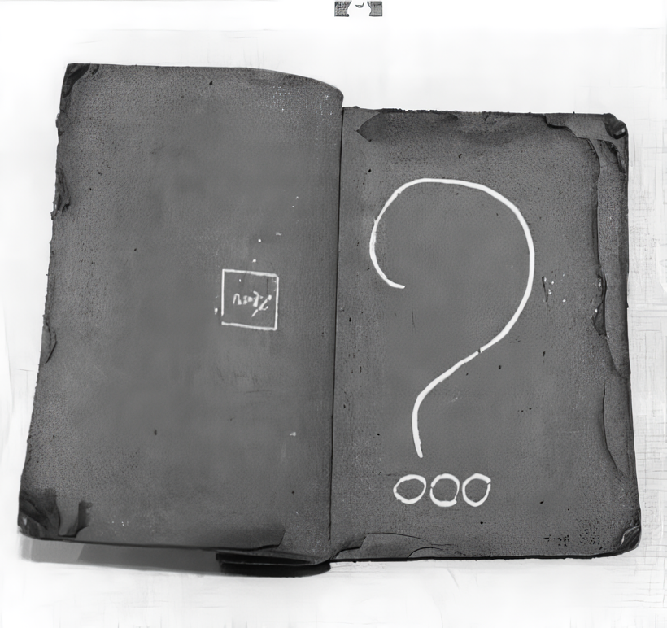

지역작가 초대전 두번째
안순영 도예展
흙으로 만든 책
2003년 10월 25일(토) - 11월 8일(토)
도예가 안순영의 '흙으로 만든 책'에 대해
- 흙내음 나는 삶의 단상들..
가을은 독서의 계절, 사색의 계절이라 한다. 낙엽이 한 잎 두 잎 떨어지고 찬바람이 옷깃을 스치고 지나가는 늦가을이면 지난 세월에 대한 추억들로 사색에 잠기곤 한다. 이러한 단상들은 도예가 안순영의 손에 의해 흙 속에 각인되고 다시 불 속에서 제본되어 책으로 탄생되었다. 경상남도 산청지방에서 난다는 산청 흙으로 빚은 다음 소금 유약을 덧발라 색을 낸 것이다. 이렇게 도예가의 손을 거쳐 자연의 힘으로 만들어진 책은 투박하면서도 꾸밈이 없다. 그 모습을 보면 빛깔은 은은한 적갈색이요 모양은 넘어가는 책장이 굳어버린 모습이다.
안순영의 흙으로 만든 책은 삶의 어느 순간이 정지된 듯하다. 펼쳐진 책장에는 작가가 갈겨쓴 필기체의 글과 추상화 그리고 상형문자들이 새겨져 있다. 이것들은 작가가 흙을 만지면서 순간순간 떠오르는 단상들과 기억 속에 자리잡고 있던 상념들을 적은 것이라고 한다. 지나가 버리는 그 시간이 아쉬운 듯 20여 년이 넘는 세월을 흙과 함께 해 온 도예가 안순영은 그 흙으로 인생의 페이지를 빚어내고 그 속에 삶을 새겨 넣었다. 그가 빚은 책에서는 삶의 내음, 자연의 내음 그리고 소탈하면서 넉넉한 한 인간의 내! 음이 풍겨온다.
올 가을에는 흙내음 나는 책을 읽어보는게 어떨까..
